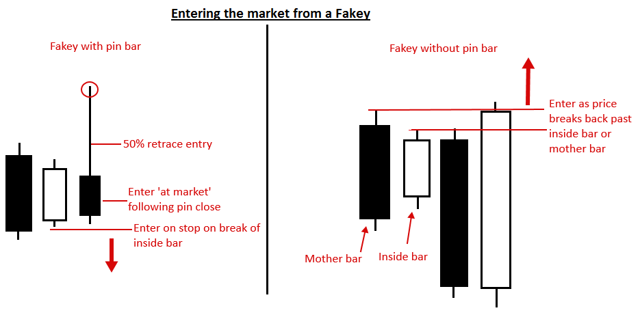
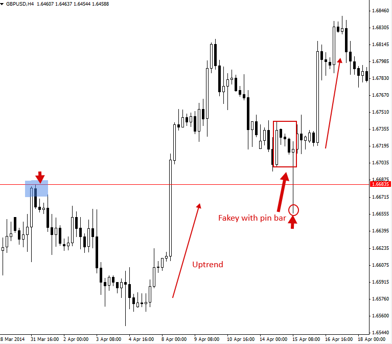
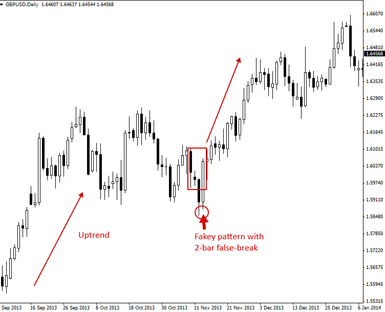
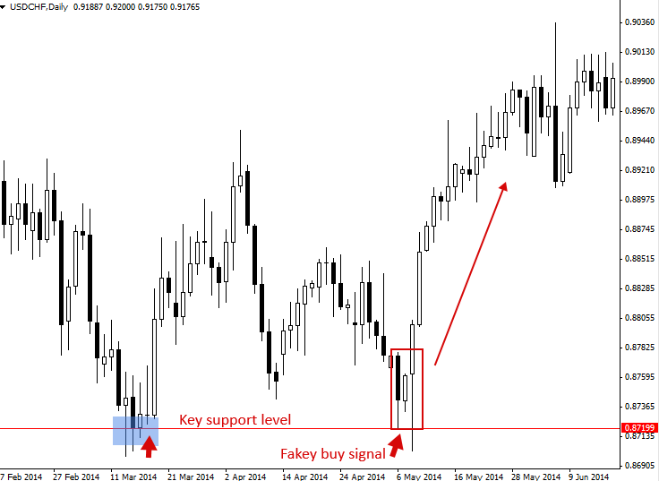
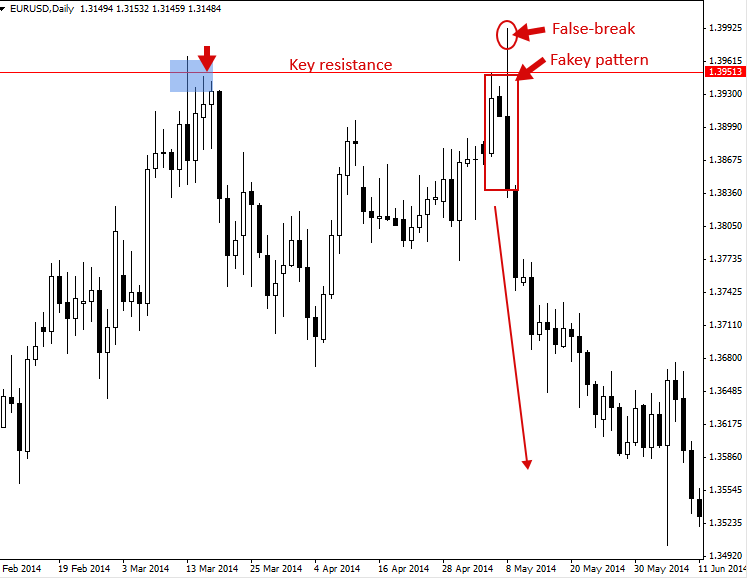

Fakey Trading Strategy (Inside Bar False Break Out)
가짜 패턴(인사이드 바 거짓 브레이크아웃)
페이키 패턴은 "내부 봉 패턴에서 거짓 돌파"라고 가장 잘 설명할 수 있습니다. 페이키 패턴은 항상 내부 봉 패턴 에서 시작합니다 . 가격이 처음에 내부 봉 패턴에서 돌파했지만 빠르게 반전하여 거짓 돌파를 발생시키고 모봉이나 내부 봉 범위 내에서 마감하는 경우, 페이키 패턴이 됩니다.
그러면 이렇게 생각해 보세요: 안쪽 막대 + 거짓 브레이크아웃 = 가짜 패턴.
Fakey 패턴은 거짓 브레이크 바로 핀 바를 가질 수도 있고 그렇지 않을 수도 있습니다. 거짓 브레이크 바는 두 개의 막대로 구성된 패턴일 수도 있는데, 첫 번째 막대가 안쪽 막대/모체 막대 범위 밖에서 마감되고, 두 번째 막대가 모체 막대 및(또는) 안쪽 막대 범위 내에서 다시 마감되어 거짓 브레이크를 완료합니다.
페이키 패턴은 매우 중요하고 강력한 Price Action 거래 전략 입니다 . '대형주'의 스톱 헌팅을 파악하고 향후 Price Action을 예측하는 데 매우 유용한 단서를 제공하기 때문입니다. 모든 Price Action 거래자는 페이키 패턴을 활용하는 방법을 진지하게 고려해야 하며, PA 거래에 필수적인 무기입니다.
이 가격 액션 전략을 명확히 하기 위해 다양한 유형의 Fakey 패턴의 몇 가지 예를 살펴보겠습니다.

위 그림에서 다양한 Fakey 패턴을 볼 수 있는데, 항상 먼저 안쪽 봉이 형성되고, 그 다음에 안쪽 봉의 거짓 돌파가 발생합니다. Fakey 패턴은 위에서 본 예시와 약간 다를 수 있지만, 위의 네 가지 예시는 차트에서 접하게 될 가장 일반적인 Fakey 트레이딩 전략 유형을 보여줍니다.
Fakey Patterns로 거래하는 방법
가짜 패턴은 추세 시장, 범위 제한 시장, 또는 주요 차트 수준에서 추세와 반대로 거래될 수 있습니다. 외환 시장에는 거짓 돌파가 많기 때문에 가짜 패턴을 활용하는 법을 배우는 것은 매우 중요합니다. 많은 트레이더들이 그러하듯이 거짓 돌파의 희생양이 되지 않고, 이러한 거짓 돌파를 활용하여 수익을 창출할 수 있기 때문입니다.
Fakey 신호에 대한 가장 일반적인 항목은 다음과 같습니다.
- 초기의 잘못된 돌파 이후, 가격이 내부봉이나 모봉의 저점 또는 고점을 돌파할 때 진입하세요. 이는 일시정지 진입 또는 시장가 진입일 수 있습니다.
- Fakey 패턴에 핀 바가 있는 경우 핀 바 거래 항목을 사용할 수 있습니다.

다양한 시장 상황에서 Fakey 신호 거래의 여러 가지 예를 살펴보겠습니다.
인기 시장에서 Fakey를 거래하세요
아래 차트는 추세장에서 가짜 매수 신호의 좋은 예시를 보여줍니다. 핀 바가 거짓 브레이크 바인 경우입니다. 이 신호에서는 모체 바 구조 내에 실제로 세 개의 내부 바가 있다는 점에 유의하십시오. 이는 비교적 흔한 현상이며, 거짓 브레이크 바 또는 '가짜' 바가 나타나기 전에 모체 바 내에 네 개의 내부 바가 나타나는 경우도 있습니다.

다음 차트는 추세장에서 Fakey 패턴을 활용한 트레이딩의 또 다른 좋은 예시를 보여줍니다. 이 Fakey 패턴이 형성되기 전에는 명확한 상승 추세가 있었습니다. 이 Fakey 패턴은 두 개의 막대로 구성된 거짓 브레이크(false break)를 가진 패턴입니다. 즉, 거짓 브레이크가 하나의 막대가 아니라 두 개의 연속된 막대에 걸쳐 발생했다는 의미입니다. 이는 시장을 분석하고 트레이딩할 때 주의해야 할 또 다른 일반적인 Fakey 신호 입니다.

주요 차트 수준에서 추세에 반하는 Fakey 거래
다음으로, 역추세 페이키(Fakey)의 예를 살펴보겠습니다. 이는 가격이 최근/단기 일간 차트 모멘텀/추세에 반하는 움직임을 보이는 페이키입니다. 이 경우, 하락세 이후 주요 지지선에서 형성된 강세 페이키 매수 신호였습니다. 이 페이키 신호는 매우 훌륭하고 명확했으며(명확하게 정의되어 있었고), 주요 지지선과 그 아래에 합류 지점이 있었기 때문에 취할 가치가 있는 역추세 페이키였습니다.

역추세 Fakey 패턴의 또 다른 예시입니다. 이번에는 주요 저항선에서 나타난 약세 Fakey 매도 신호였습니다. 이 Fakey 패턴이 형성되기 직전 시장은 분명히 상승세를 타고 있었습니다. 그런데 Fakey 패턴이 형성되었을 때, 시장의 주요 저항선을 돌파하여 하락 가능성에 무게를 더했습니다. 이 약세 Fakey 패턴 이후의 극적인 매도세를 확인할 수 있습니다.

가짜 패턴 거래에 대한 팁:
- 위의 Fakey 예시는 여러분이 접하게 될 모든 Fakey 패턴을 포함하는 것이 아니라, 흔히 볼 수 있는 Fakey 패턴 중 일부입니다. 만약 안쪽 바 패턴이 있고, 그 안쪽 바 패턴이 거짓 돌파(false breakout)된다면, 아마도 Fakey 패턴일 가능성이 높다는 점을 기억하세요.
- 위의 내용이 위에서 언급한 Fakey 요건을 충족하는 '모든' 패턴을 거래해야 한다는 것을 의미하지는 않습니다. 특정 Fakey 패턴을 채택해야 할지 여부는 Fakey 패턴의 형성 과정뿐만 아니라 시장 내 어느 지점에서 형성되는지, 즉 기초 시장 상황/역동성 내에서 합류 지점이 있는지, 그리고 '의미가 있는지' 여부에 따라 달라집니다. 훈련과 교육, 경험, 그리고 화면 시간 Price Action 트레이딩을 통해 어떤 Fakey(또는 다른 Price Action 패턴 )를 거래할 가치가 있고 어떤 패턴을 포기할 가치가 있는지 더 잘 이해하게 될 것입니다.
- 처음에는 일간 차트에서 Fakey 시그널을 고수하세요. 일간 차트 시그널은 짧은 시간 단위 차트보다 전반적으로 더 높은 정확도와 신뢰성을 제공합니다. 경험과 자신감이 쌓이면 Fakey 시그널을 4시간 및 1시간 단위 차트에서도 활용할 수 있습니다.
https://priceaction.com/price-action-university/strategies/fakey/